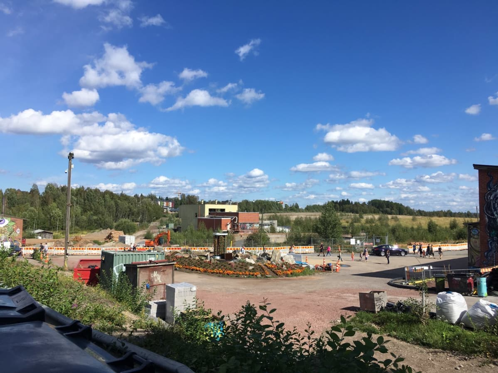

Tampere (ruots. Tammerfors) on Suomen kaupunki ja Pirkanmaan maakuntakeskus, joka sijaitsee Näsijärven ja Pyhäjärven rannoilla. Tampere on väkiluvultaan Suomen kolmanneksi suurin kunta ja lähikuntineen Suomen toiseksi suurin kaupunkialue. Tampere on myös asukasmäärältään Pohjoismaiden suurin sisämaakaupunki. Tampereen kaupungin väkiluku on 238 671 ja Tampereen keskustaajaman 330 711 asukasta. Tampereen kaupunkiseudun, johon kuuluu Tampereen lisäksi seitsemän ympäryskuntaa, väkiluku 31.12.2019 oli 393 941 asukasta.